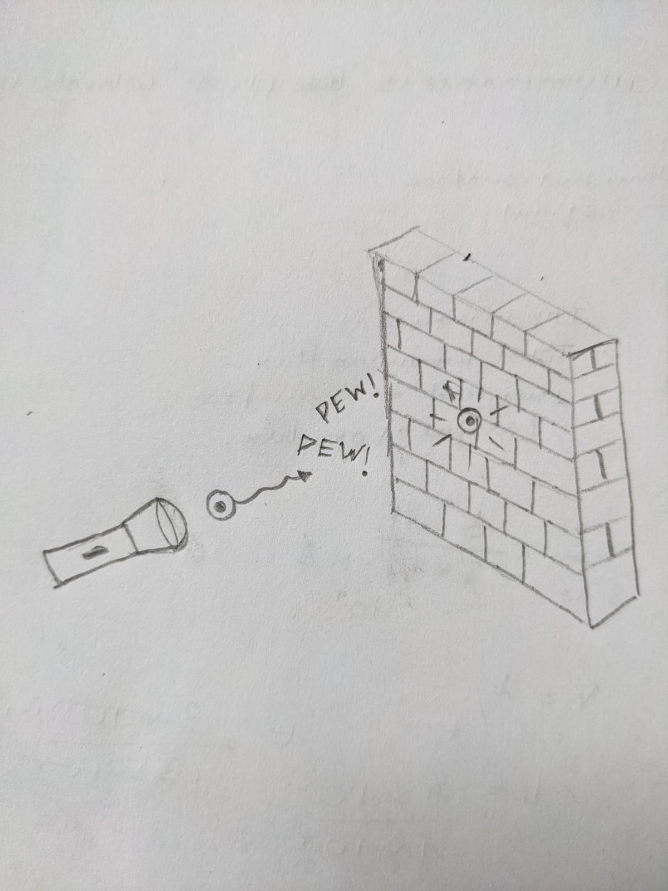
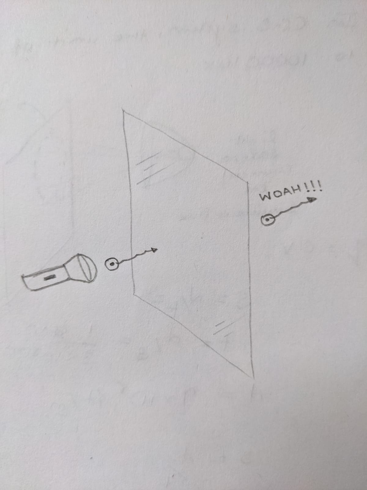

In order to understand about why is glass transparent we would have to talk about the electronic band theory of atoms. The electronic band structure of a solid are indications of the energies that the electrons have. These electrons are in layers which are called states. The states in an atom are fixed and the presence of electron in a state depends upon the energy it stores. When external energy is supplied to the electron it gets excited and moves from lower energy state to higher energy state, while on the other hand when the energy is released the electron moves from higher energy level to lower energy level. Now you might be thinking what it has to do with the transparency of glass right??
Now, let us consider a photon (particle of light) reflected from an object, when it passes through an object such as a masonry wall the energy is absorbed and so the light cannot pass through the wall. This happens because the energy gap in masonry wall atom are quite narrow through which the electrons easily jump from low energy state to high energy state. The energy provided by the photon in this case is sufficient(Just an example). Thus photon does not get transmitted through the wall as the energy is absorbed. In objects such as glass the energy gap is too wide so that the electrons are not capable of jumping from low to high energy state, the energy provided by photon is not enough. The electrons has to be either in a lower or a higher state it cannot be in the middle of the two states. Thus with such a less amount of energy that the photon provides electron do not transit such a large gap and the photon right away passes through the glass.Thus photon reflected from the object is visible to us and thus the object is visible to us. Thus this a reason due to which we are able to see through glass which is transparent.
